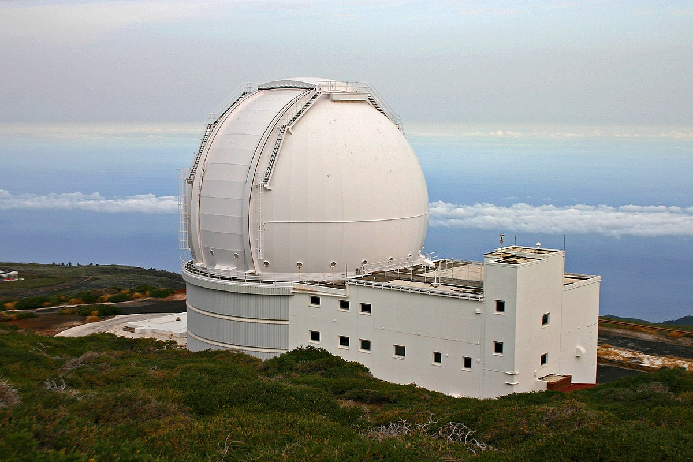
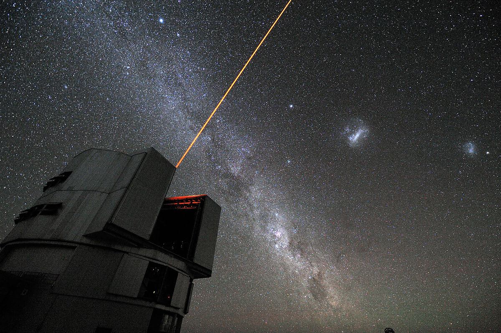
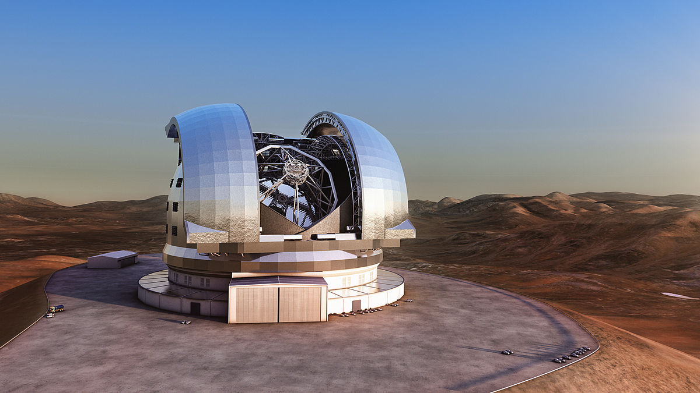

Freie Daten(spuren) aus dem All
wose
2017-10-21
Daten
(durch Beobachtungen, Messungen, statistische Erhebungen u. a. gewonnene) [Zahlen]werte, (auf Beobachtungen, Messungen, statistischen Erhebungen u. a. beruhende) Angaben, formulierbare Befunde
… aus dem All
!
Sonnenfinsternis

Hilfsmittel/Messmittel/Sensoren
Teleskope (kleine)
Teleskope (große)

By H. Raab (User:Vesta) - Own work, CC BY-SA 3.0, https://commons.wikimedia.org/w/index.php?curid=4744255
Teleskope (sehr große)

By G. Hüdepohl/ESO - http://www.eso.org/public/images/gerd_huedepohl_2/, CC BY 4.0, https://commons.wikimedia.org/w/index.php?curid=10980623
Teleskope (extrem große)

Sentinel-5p
ESA/ATG medialab